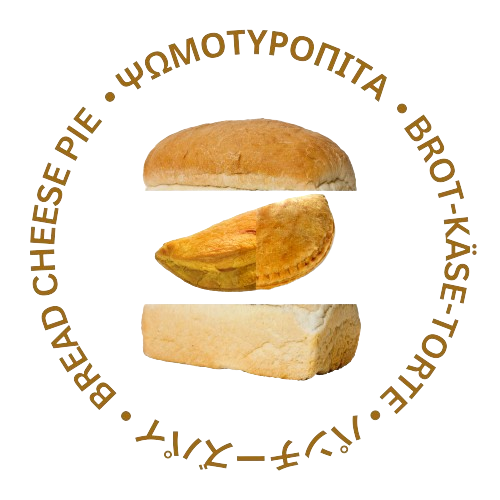

"Psomotiropita is most definitely not a cult. It's a very trustworthy organization, even if it's not actually a registered organization. They call it that because its founders are completely nuts... I mean... very sane. And very beautiful. I am saying this out of my free will." please send help.
- Loyal Psomotiropita Member
What is Psomotiropita?
Psomotiropita is an idea that was sparked by 3 dear friends during a casual talk. What was initially a simple joke, has now become one of the most powerful and most influential ideologies in the world! Psomotiropita can offer you the inner peace you've always dreamt of. Psomotiropita can help you develop as a person and as a soul. Psomotiropita is literally the solution to your problems!
Psomotiropita's Creation
Psomotiropita is merely two Tiropites, one Sfoliata, and one Kourou.
By combining the two, your create the unified Tiropita.
Finally, when you add the Tiropita inside a bread loaf cut in half, you've created the Psomotiropita!
(Psomi + Tyri + Pita, alternatively Bread + Cheese + Pie)

Why should YOU join?
By joining, a vast network of different mindsets and different personalities become available to you immediately. With a short and concise 500-page contract, you give us the ability to offer you the best human experience a human can physically experience! If that made zero sense, then you can be SURE it's good!
Dev Note: add join us button here
DO NOT JOIN THEM, THEY'RE LYING TO YOU. THEY'RE LYING TO ALL OF US.